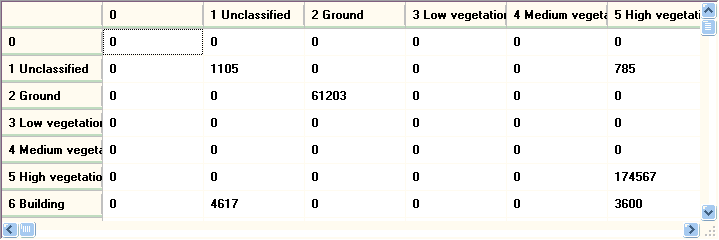

|
 |
Matrix shows agreement between two
classifications. To run, the two LAS files must have the same number of returns. MICRODEM will compute the distance between the x-y coordinates in the two files, and if any are greater than zero, will report the number. To classify points, you could try lastools or mcc. You might want to reclassify one of the files in case it uses different categories, such as for vegetation. |
Last revision 5/16/2017